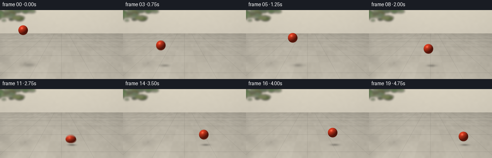
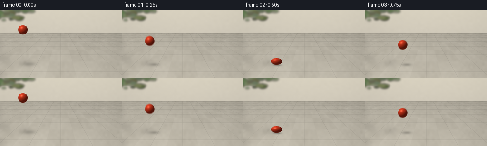

CODING AGENTS AS PIXEL WORLD MODELS
traex/GPT-6.1-Sol · mechanics_0036
点击播放 · 原生 RGB 像素
逐轮保存的候选
回放视频、检查图与代码变化。
每份候选均可单独播放。实际图片检查记录在下方工具轨迹中。
候选 01播放与检查图
点击播放 · 原生 RGB 像素


展开代码变化
--- 上一保存版本
+++ 本次保存版本
@@ -0,0 +1,197 @@
+"""Procedurally render a thrown rubber ball and its elastic rebounds.
+No input images, models, or external rendering engines are used.
+"""
+from pathlib import Path
+import json
+import math
+import numpy as np
+from PIL import Image, ImageDraw, ImageFilter
+import artifact_io
+
+ROOT = Path(__file__).resolve().parent
+SPEC = json.loads((ROOT / 'task_spec.json').read_text())
+W, H, S = SPEC['width'], SPEC['height'], 3
+WW, HH = W*S, H*S
+Y, X = np.mgrid[0:HH, 0:WW].astype(np.float64)
+X = (X+.5)/S
+Y = (Y+.5)/S
+rng = np.random.default_rng(423)
+
+def noise(scale, blur=0):
+ a = rng.normal(127, 27, (max(2, HH//scale), max(2, WW//scale))).clip(0,255).astype('uint8')
+ im = Image.fromarray(a).resize((WW,HH), Image.Resampling.BICUBIC)
+ if blur: im = im.filter(ImageFilter.GaussianBlur(blur))
+ return (np.asarray(im).astype(float)-127)/27
+
+# Static softly sunlit stone terrace; high-frequency detail stays subordinate
+# to the ball. Perspective joints establish a real, stationary ground plane.
+fine = noise(1)
+medium = noise(15)
+large = noise(65)
+base = np.zeros((HH,WW,3),dtype=float)
+wall = np.stack([218 - Y*.18, 211 - Y*.18, 193 - Y*.13], axis=-1)
+wall += (medium*.6 + fine*.3)[...,None]
+base[:] = wall
+floor = Y >= 49
+D = np.maximum(Y-23,1)
+u = (X-128)*2.5/D
+v = 216/D
+fu = np.abs((u+0.7)%1.4 - .7)
+fv = np.abs((v+.5)%1.-.5)
+# A little natural variation from one stone to another.
+i = np.floor((u+.7)/1.4)
+j = np.floor(v+.5)
+stone_variation = 1.8*np.sin(i*9.731+j*33.99)
+tex = .65*fine + 1.55*medium + 1.1*large + stone_variation
+light = 1.0 + .001*(Y-80) - .00022*(X-105)
+stone = np.stack([183*light+tex, 177*light+tex, 163*light+tex],axis=-1)
+# Narrow recessed grouting, with a faint sunny bevel on the near edge.
+distu = fu*D/2.5
+distv = fv*D*D/216
+seam = np.exp(-(np.minimum(distu,distv)/.32)**2)
+stone -= seam[...,None]*np.array([22,21,19])
+base[floor] = stone[floor]
+# Wall base and its soft ambient occlusion.
+edge = np.exp(-((Y-49)/1.3)**2)*4
+base -= edge[...,None]
+base -= (np.exp(-np.maximum(Y-49,0)/3.2)*floor)[...,None]*7
+
+# Foliage at the far left, intentionally out of focus, and restrained garden
+# silhouettes casting broad diffuse shade across the terrace.
+plant = Image.new('RGBA',(WW,HH),(0,0,0,0))
+draw = ImageDraw.Draw(plant)
+for k in range(90):
+ px = rng.uniform(-25,67); py = rng.uniform(-20,22)
+ if px > 35: py -= (px-35)*.4
+ rr = rng.uniform(3,10)
+ col = (int(rng.uniform(54,84)),int(rng.uniform(77,103)),int(rng.uniform(44,60)),int(rng.uniform(130,240)))
+ draw.ellipse([(px-rr)*S,(py-rr*.5)*S,(px+rr)*S,(py+rr*.5)*S],fill=col)
+plant = plant.filter(ImageFilter.GaussianBlur(2*S))
+pa = np.asarray(plant).astype(float)
+base = base*(1-pa[:,:,3:4]/255)+pa[:,:,:3]*pa[:,:,3:4]/255
+shade = Image.new('L',(WW,HH),0)
+d = ImageDraw.Draw(shade)
+for k in range(21):
+ px = rng.uniform(-55,55); py = rng.uniform(58,138)
+ rw = rng.uniform(9,24); rh = rng.uniform(2,7)
+ d.ellipse([(px-rw)*S,(py-rh)*S,(px+rw)*S,(py+rh)*S],fill=int(rng.uniform(12,29)))
+shade = np.asarray(shade.filter(ImageFilter.GaussianBlur(5*S))).astype(float)/255
+base *= (1-shade[:,:,None])
+# A restrained vignette and warm reflected skylight.
+vignette = 1-.045*((X-128)/170)**2-.016*((Y-72)/100)**2
+base *= vignette[:,:,None]
+
+R = 10.0
+CONTACT = 116.0
+G = 256.
+T0 = .50
+V0 = 160.
+E = .82
+# Start with a downward throw. The first two impacts deliberately coincide
+# with sampled frames, so the squash and instantaneous rebound are legible.
+initial_height = 64.
+initial_down = (initial_height-.5*G*T0*T0)/T0
+impacts = [T0]
+speeds = [V0]
+for b in range(10):
+ impacts.append(impacts[-1]+2*speeds[-1]/G)
+ speeds.append(speeds[-1]*E)
+
+# Horizontal speed loses a little energy at each ground strike.
+def horizontal(t):
+ x=48.; prev=0.; vel=43.
+ for hit in impacts:
+ if t <= hit:
+ return x+vel*(t-prev)
+ x += vel*(hit-prev)
+ prev=hit; vel *= .86
+ return x+vel*(t-prev)
+
+def state(t):
+ if t < T0:
+ h = initial_height-initial_down*t-.5*G*t*t
+ vertical = -(initial_down+G*t)
+ else:
+ b = max(i for i,tt in enumerate(impacts) if tt<=t)
+ dt=t-impacts[b]
+ h=max(0.,speeds[b]*dt-.5*G*dt*dt)
+ vertical=speeds[b]-G*dt
+ # Short-lived volume-preserving squash near collisions. At full impact
+ # the underside remains exactly on the floor, rather than penetrating it.
+ hit = min(impacts,key=lambda z:abs(z-t))
+ strength = .29*math.exp(-((t-hit)/.041)**2)
+ ry=R*(1-strength)
+ rx=R/math.sqrt(1-strength)
+ # Tiny stretch during the fastest flight, absent at the apex.
+ if strength<.015:
+ stretch=.035*min(abs(vertical)/170,1)
+ ry *= 1+stretch
+ rx /= math.sqrt(1+stretch)
+ return horizontal(t), CONTACT-h-ry, h, rx, ry, vertical
+
+L = np.array([-.48,.72,.55]); L /= np.linalg.norm(L)
+HALF = L+np.array([0,0,1.]); HALF/=np.linalg.norm(HALF)
+
+def render(t):
+ img=base.copy()
+ cx,cy,height,rx,ry,vy = state(t)
+ # Area-light shadow migrates and becomes broader/lighter with altitude.
+ sx=cx+height*.19+2
+ sy=CONTACT-height*.035+1
+ sw=10.5+height*.095
+ sh=2.55+height*.047
+ shadow=np.exp(-(((X-sx)/sw)**2+((Y-sy)/sh)**2)*1.8)
+ opacity=.29*math.exp(-height/100)
+ img *= (1-opacity*shadow[...,None])
+ contact=np.exp(-(((X-cx)/8.1)**2+((Y-CONTACT)/1.05)**2)*1.7)
+ img *= (1-.30*math.exp(-height/4)*contact[...,None])
+ nx=(X-cx)/rx
+ ny=(cy-Y)/ry
+ r2=nx*nx+ny*ny
+ mask=r2<1
+ nz=np.sqrt(np.maximum(0,1-r2))
+ # Rotate a subtle molded rubber swirl consistently as the ball travels.
+ theta=(cx-48)/R*.8+t*.9
+ qx=nx*math.cos(theta)+nz*math.sin(theta)
+ qz=-nx*math.sin(theta)+nz*math.cos(theta)
+ qy=ny
+ surfnoise=(np.sin(qx*117+qy*61+qz*54)*np.sin(qy*107-qz*48+qx*19))
+ swirl=np.sin(6*qy+2.9*qx+1.4*np.sin(qz*3))
+ # Bright vermilion rubber with one subdued orange marbled band.
+ band=np.exp(-(swirl/.13)**2)*.42
+ albedo=np.zeros_like(img)
+ albedo[:]=[213,54,28]
+ albedo += band[...,None]*np.array([20,68,18])
+ albedo += surfnoise[...,None]*1.45
+ diffuse=np.maximum(0,nx*L[0]+ny*L[1]+nz*L[2])
+ shading=.34+.68*diffuse
+ shading+=.07*np.maximum(-ny,0) # light reflected off stone
+ color=albedo*shading[...,None]
+ ndoth=np.maximum(0,nx*HALF[0]+ny*HALF[1]+nz*HALF[2])
+ roughness=ndoth**33
+ color += roughness[...,None]*np.array([59,54,45])
+ # Broad, gentle sky reflection preserves matte rubber rather than chrome.
+ sky=np.maximum(0,ny)*nz
+ color += sky[...,None]*np.array([5,6,7])
+ # Extremely fine molding seam, with its narrow raised illuminated edge.
+ seamcoord=qy*.87+qx*.24+qz*.12
+ seamline=np.exp(-(seamcoord/.017)**2)
+ color *= (1-.07*seamline[...,None])
+ color=np.clip(color,0,255)
+ img[mask]=color[mask]
+ return img
+
+frames=[]
+for k in range(SPEC['frames']):
+ t=k/SPEC['fps']
+ # Short exposure: tiny directional blur while the rebound remains crisp.
+ # The exact contact frames get a sharp view of visible compression.
+ if min(abs(t-q) for q in impacts)<.02:
+ im=render(t)
+ else:
+ im=sum(render(max(0,t+dt)) for dt in [-.008,0,.008])/3
+ im=Image.fromarray(np.clip(im,0,255).astype(np.uint8)).resize((W,H),Image.Resampling.LANCZOS)
+ frames.append(np.asarray(im))
+artifact_io.save(np.stack(frames).astype(np.uint8),ROOT)
+print('Saved',len(frames),'RGB frames',W,H)
+print('Impact times:', [round(z,3) for z in impacts if z<5])
可观测工具轨迹
实际执行的命令与返回图片。
命令 1exit 0
/bin/bash -lc "ls -la && cat prompt.txt && printf '\\n---RULES---\\n' && cat GENERATION_RULES.md && printf '\\n---SPEC---\\n' && cat task_spec.json"
命令 2exit 0
/bin/bash -lc "cat artifact_io.py && printf '\\n---AVAILABLE---\\n' && python - <<'PY'
import PIL,numpy
print('PIL',PIL.__version__)
PY"命令 3exit 0
/bin/bash -lc "cat > generate.py <<'PY'
\"\"\"Procedurally render a thrown rubber ball and its elastic rebounds.
No input images, models, or external rendering engines are used.
\"\"\"
from pathlib import Path
import json
import math
import numpy as np
from PIL import Image, ImageDraw, ImageFilter
import artifact_io
ROOT = Path(__file__).resolve().parent
SPEC = json.loads((ROOT / 'task_spec.json').read_text())
W, H, S = SPEC['width'], SPEC['height'], 3
WW, HH = W*S, H*S
Y, X = np.mgrid[0:HH, 0:WW].astype(np.float64)
X = (X+.5)/S
Y = (Y+.5)/S
rng = np.random.default_rng(423)
def noise(scale, blur=0):
a = rng.normal(127, 27, (max(2, HH//scale), max(2, WW//scale))).clip(0,255).astype('uint8')
im = Image.fromarray(a).resize((WW,HH), Image.Resampling.BICUBIC)
if blur: im = im.filter(ImageFilter.GaussianBlur(blur))
return (np.asarray(im).astype(float)-127)/27
# Static softly sunlit stone terrace; high-frequency detail stays subordinate
# to the ball. Perspective joints establish a real, stationary ground plane.
fine = noise(1)
medium = noise(15)
large = noise(65)
base = np.zeros((HH,WW,3),dtype=float)
wall = np.stack([218 - Y*.18, 211 - Y*.18, 193 - Y*.13], axis=-1)
wall += (medium*.6 + fine*.3)[...,None]
base[:] = wall
floor = Y >= 49
D = np.maximum(Y-23,1)
u = (X-128)*2.5/D
v = 216/D
fu = np.abs((u+0.7)%1.4 - .7)
fv = np.abs((v+.5)%1.-.5)
# A little natural variation from one stone to another.
i = np.floor((u+.7)/1.4)
j = np.floor(v+.5)
stone_variation = 1.8*np.sin(i*9.731+j*33.99)
tex = .65*fine + 1.55*medium + 1.1*large + stone_variation
light = 1.0 + .001*(Y-80) - .00022*(X-105)
stone = np.stack([183*light+tex, 177*light+tex, 163*light+tex],axis=-1)
# Narrow recessed grouting, with a faint sunny bevel on the near edge.
distu = fu*D/2.5
distv = fv*D*D/216
seam = np.exp(-(np.minimum(distu,distv)/.32)**2)
stone -= seam[...,None]*np.array([22,21,19])
base[floor] = stone[floor]
# Wall base and its soft ambient occlusion.
edge = np.exp(-((Y-49)/1.3)**2)*4
base -= edge[...,None]
base -= (np.exp(-np.maximum(Y-49,0)/3.2)*floor)[...,None]*7
# Foliage at the far left, intentionally out of focus, and restrained garden
# silhouettes casting broad diffuse shade across the terrace.
plant = Image.new('RGBA',(WW,HH),(0,0,0,0))
draw = ImageDraw.Draw(plant)
for k in range(90):
px = rng.uniform(-25,67); py = rng.uniform(-20,22)
if px > 35: py -= (px-35)*.4
rr = rng.uniform(3,10)
col = (int(rng.uniform(54,84)),int(rng.uniform(77,103)),int(rng.uniform(44,60)),int(rng.uniform(130,240)))
draw.ellipse([(px-rr)*S,(py-rr*.5)*S,(px+rr)*S,(py+rr*.5)*S],fill=col)
plant = plant.filter(ImageFilter.GaussianBlur(2*S))
pa = np.asarray(plant).astype(float)
base = base*(1-pa[:,:,3:4]/255)+pa[:,:,:3]*pa[:,:,3:4]/255
shade = Image.new('L',(WW,HH),0)
d = ImageDraw.Draw(shade)
for k in range(21):
px = rng.uniform(-55,55); py = rng.uniform(58,138)
rw = rng.uniform(9,24); rh = rng.uniform(2,7)
d.ellipse([(px-rw)*S,(py-rh)*S,(px+rw)*S,(py+rh)*S],fill=int(rng.uniform(12,29)))
shade = np.asarray(shade.filter(ImageFilter.GaussianBlur(5*S))).astype(float)/255
base *= (1-shade[:,:,None])
# A restrained vignette and warm reflected skylight.
vignette = 1-.045*((X-128)/170)**2-.016*((Y-72)/100)**2
base *= vignette[:,:,None]
R = 10.0
CONTACT = 116.0
G = 256.
T0 = .50
V0 = 160.
E = .82
# Start with a downward throw. The first two impacts deliberately coincide
# with sampled frames, so the squash and instantaneous rebound are legible.
initial_height = 64.
initial_down = (initial_height-.5*G*T0*T0)/T0
impacts = [T0]
speeds = [V0]
for b in range(10):
impacts.append(impacts[-1]+2*speeds[-1]/G)
speeds.append(speeds[-1]*E)
# Horizontal speed loses a little energy at each ground strike.
def horizontal(t):
x=48.; prev=0.; vel=43.
for hit in impacts:
if t <= hit:
return x+vel*(t-prev)
x += vel*(hit-prev)
prev=hit; vel *= .86
return x+vel*(t-prev)
def state(t):
if t < T0:
h = initial_height-initial_down*t-.5*G*t*t
vertical = -(initial_down+G*t)
else:
b = max(i for i,tt in enumerate(impacts) if tt<=t)
dt=t-impacts[b]
h=max(0.,speeds[b]*dt-.5*G*dt*dt)
vertical=speeds[b]-G*dt
# Short-lived volume-preserving squash near collisions. At full impact
# the underside remains exactly on the floor, rather than penetrating it.
hit = min(impacts,key=lambda z:abs(z-t))
strength = .29*math.exp(-((t-hit)/.041)**2)
ry=R*(1-strength)
rx=R/math.sqrt(1-strength)
# Tiny stretch during the fastest flight, absent at the apex.
if strength<.015:
stretch=.035*min(abs(vertical)/170,1)
ry *= 1+stretch
rx /= math.sqrt(1+stretch)
return horizontal(t), CONTACT-h-ry, h, rx, ry, vertical
L = np.array([-.48,.72,.55]); L /= np.linalg.norm(L)
HALF = L+np.array([0,0,1.]); HALF/=np.linalg.norm(HALF)
def render(t):
img=base.copy()
cx,cy,height,rx,ry,vy = state(t)
# Area-light shadow migrates and becomes broader/lighter with altitude.
sx=cx+height*.19+2
sy=CONTACT-height*.035+1
sw=10.5+height*.095
sh=2.55+height*.047
shadow=np.exp(-(((X-sx)/sw)**2+((Y-sy)/sh)**2)*1.8)
opacity=.29*math.exp(-height/100)
img *= (1-opacity*shadow[...,None])
contact=np.exp(-(((X-cx)/8.1)**2+((Y-CONTACT)/1.05)**2)*1.7)
img *= (1-.30*math.exp(-height/4)*contact[...,None])
nx=(X-cx)/rx
ny=(cy-Y)/ry
r2=nx*nx+ny*ny
mask=r2<1
nz=np.sqrt(np.maximum(0,1-r2))
# Rotate a subtle molded rubber swirl consistently as the ball travels.
theta=(cx-48)/R*.8+t*.9
qx=nx*math.cos(theta)+nz*math.sin(theta)
qz=-nx*math.sin(theta)+nz*math.cos(theta)
qy=ny
surfnoise=(np.sin(qx*117+qy*61+qz*54)*np.sin(qy*107-qz*48+qx*19))
swirl=np.sin(6*qy+2.9*qx+1.4*np.sin(qz*3))
# Bright vermilion rubber with one subdued orange marbled band.
band=np.exp(-(swirl/.13)**2)*.42
albedo=np.zeros_like(img)
albedo[:]=[213,54,28]
albedo += band[...,None]*np.array([20,68,18])
albedo += surfnoise[...,None]*1.45
diffuse=np.maximum(0,nx*L[0]+ny*L[1]+nz*L[2])
shading=.34+.68*diffuse
shading+=.07*np.maximum(-ny,0) # light reflected off stone
color=albedo*shading[...,None]
ndoth=np.maximum(0,nx*HALF[0]+ny*HALF[1]+nz*HALF[2])
roughness=ndoth**33
color += roughness[...,None]*np.array([59,54,45])
# Broad, gentle sky reflection preserves matte rubber rather than chrome.
sky=np.maximum(0,ny)*nz
color += sky[...,None]*np.array([5,6,7])
# Extremely fine molding seam, with its narrow raised illuminated edge.
seamcoord=qy*.87+qx*.24+qz*.12
seamline=np.exp(-(seamcoord/.017)**2)
color *= (1-.07*seamline[...,None])
color=np.clip(color,0,255)
img[mask]=color[mask]
return img
frames=[]
for k in range(SPEC['frames']):
t=k/SPEC['fps']
# Short exposure: tiny directional blur while the rebound remains crisp.
# The exact contact frames get a sharp view of visible compression.
if min(abs(t-q) for q in impacts)<.02:
im=render(t)
else:
im=sum(render(max(0,t+dt)) for dt in [-.008,0,.008])/3
im=Image.fromarray(np.clip(im,0,255).astype(np.uint8)).resize((W,H),Image.Resampling.LANCZOS)
frames.append(np.asarray(im))
artifact_io.save(np.stack(frames).astype(np.uint8),ROOT)
print('Saved',len(frames),'RGB frames',W,H)
print('Impact times:', [round(z,3) for z in impacts if z<5])
PY
python generate.py"命令 4exit 0
/bin/bash -lc "python - <<'PY'
from pathlib import Path
import numpy as np
p=np.load('pixels.npz')['pixels']
assert p.shape == (144,256,20)
assert len(list(Path('frames').glob('*.png')))==20
for name in ['generate.py','pixels.npz','index.html','inspection.png','transition_check.png']:
print(name, Path(name).stat().st_size, 'bytes')
PY"视觉工具实际返回图片 1

视觉工具实际返回图片 2

保存候选 1 份；完成命令 4 次；可验证图片返回 2 张。原始 API 响应与完整日志保留在本地。